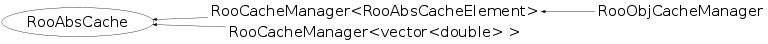

class RooAbsCache
RooAbsCache is the abstract base class for data members of RooAbsArgs that cache other (composite) RooAbsArg expressions. The RooAbsCache interface defines the interaction between the owning RooAbsArg object and the cache data member to communicate server redirects, operation mode changes and constant term optimization management calls.
Function Members (Methods)
public:
| RooAbsCache(RooAbsArg* owner = 0) | |
| RooAbsCache(const RooAbsCache&, RooAbsArg* owner = 0) | |
| virtual | ~RooAbsCache() |
| static TClass* | Class() |
| virtual void | findConstantNodes(const RooArgSet&, RooArgSet&, RooLinkedList&) |
| virtual TClass* | IsA() const |
| RooAbsCache& | operator=(const RooAbsCache&) |
| virtual void | operModeHook() |
| virtual void | optimizeCacheMode(const RooArgSet&, RooArgSet&, RooLinkedList&) |
| virtual void | printCompactTreeHook(ostream&, const char*) |
| virtual Bool_t | redirectServersHook(const RooAbsCollection&, Bool_t, Bool_t, Bool_t) |
| virtual void | ShowMembers(TMemberInspector& insp) |
| virtual void | Streamer(TBuffer& b) |
| void | StreamerNVirtual(TBuffer& b) |
Data Members
protected:
| RooAbsArg* | _owner | Pointer to owning RooAbsArg |
Class Charts
{kind=link}
{kind=link}
{kind=link}
{kind=link}

Function documentation
RooAbsCache(RooAbsArg* owner = 0)
Constructor. Takes owner as argument and register cache with owner
RooAbsCache(const RooAbsCache& , RooAbsArg* owner = 0)
Copy constructor. Takes owner as argument and registers cache with owne
void optimizeCacheMode(const RooArgSet& , RooArgSet& , RooLinkedList& )
Interface for processing of cache mode optimization calls
Bool_t redirectServersHook(const RooAbsCollection& , Bool_t , Bool_t , Bool_t )
Interface for server redirect calls
void findConstantNodes(const RooArgSet& , RooArgSet& , RooLinkedList& )
Interface for constant term node finding calls
void printCompactTreeHook(ostream& , const char* )
Interface for printing of cache guts in tree mode printing